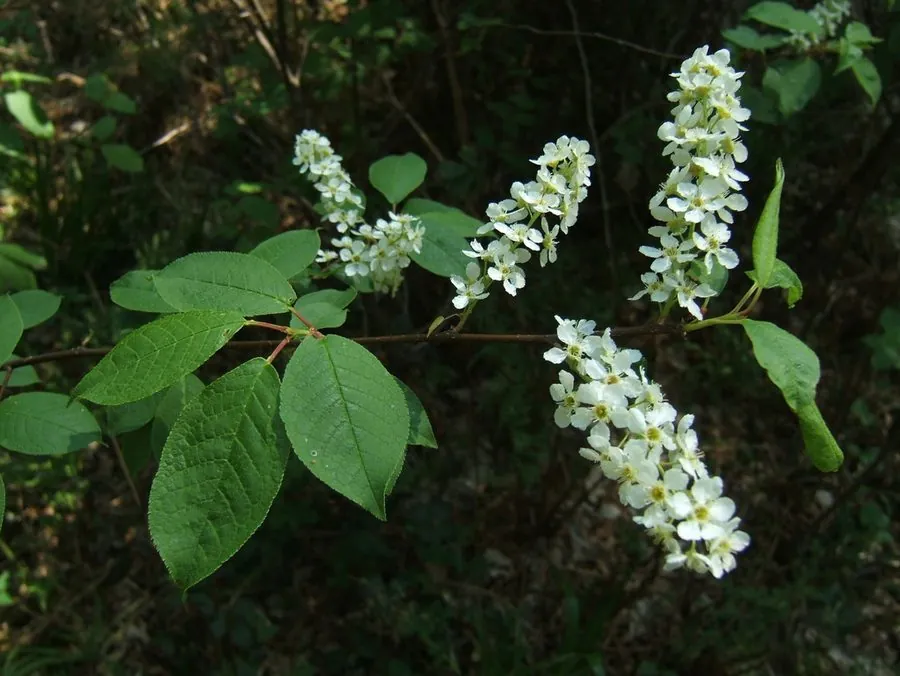

乔木 · 植物界
稠李 Prunus padus

中国北方的落叶乔木，春季开白色总状花序、香气浓郁，果实黑色可食，是北方山地与河岸的常见树种。
- 分类
- 门被子植物门纲木兰纲目蔷薇目科蔷薇科属李属
- 栖息环境
- 海拔 2000 米以下的山地、沟谷与河岸，喜光耐寒耐水湿
- 地理分布
- 中国东北、华北及西北山地，朝鲜半岛、日本、欧洲也有分布
- 保护级别
- 暂无评估；中国未列入国家重点保护野生植物名录
物种志
稠李为落叶乔木，高可达 15 m，树皮灰褐色、平滑；叶片椭圆形至倒卵形，边缘具细锯齿，叶柄顶端具腺体。花期 4–5 月，总状花序下垂，长 8–15 cm，花白色、芳香；核果近球形，成熟时黑色，果序下垂，内含 1 粒种子。
稠李分布于中国东北、华北及西北山地，也见于朝鲜半岛、日本、欧洲，喜光、耐寒、耐水湿，适宜深厚肥沃的土壤，常生于山坡、沟谷与河岸。春季白花成串、香气浓郁，是北方山地重要的观花树种；果实可食或酿酒，也可入药；木材可供家具与细木工用；树皮可提取栲胶。稠李与山桃稠李外形相似，但稠李花序更长、果实黑色，可据此区分。
形态与习性
- 株高可达 15 m，树皮平滑
- 花期4–5 月，白色总状花序
- 果期7–8 月，核果黑色
- 光照喜光，稍耐阴
- 水分喜湿润，耐水湿
- 主要用途观花树种、果实酿酒、家具用材
趣味知识
- 稠李春季开白色总状花序，花序长达 15 cm，芳香浓郁。
- 稠李的果实成熟时黑色，成串下垂，可食或酿酒。
- 稠李耐寒耐水湿，常生于北方山地沟谷与河岸。